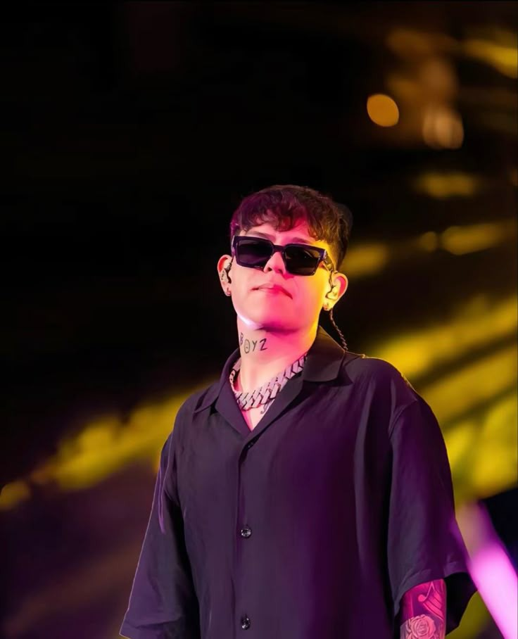

¿Qué es la musica?
La música es la combinación ordenada de ritmo, melodía y armonía que resulta agradable a los oídos. Por su carácter inmaterial, la música se considera un arte temporal o del tiempo, al igual que la literatura.
En el sentido restrictivo, la música es el arte de coordinar y transmitir efectos sonoros, armoniosos y estéticamente válidos, los cuales son generados a través de la voz o de instrumentos musicales.
La música es una manifestación artística y cultural de los pueblos, de manera que adquiere diversas formas, valores estéticos y funciones según su contexto. A la vez, es uno de los medios por el cual un individuo expresa sus sentimientos.
La persona que pone en práctica la música o la ejecuta por medio de un instrumento se llama músico.
Como comenzo la música.?
El origen de la música no ha podido ser determinado. Se estima que comenzó en la prehistoria de la humanidad, a partir de ritos religiosos y de apareamiento.
La danza y el canto parecen haber estado desde el principio asociados a la comprensión del mundo. Formaban parte de manifestaciones religiosas o chamánicas, rituales de sanación, cantos de batalla o de cacería, o bailes para atraer la lluvia.
El instrumento más antiguo encontrado hasta la fecha es la llamada flauta de Divje Babe, un fémur de oso de más de 43.000 años de antigüedad que presenta dos perforaciones circulares alineadas.
La primera canción de la que se tiene registro es un fragmento musical escrito en cuneiforme en Sumeria en el año 1400 a. C. En esta civilización existían instrumentos de percusión y de cuerdas
Que son los corridos tumbados.?
Muchos no lo saben, pero los elementos de la polka y la música folclórica fueron introducidos a México por europeos en la década de 1830. El sonido de la guitarra y el acordeón fue adaptado por la gente del pueblo, haciéndose música propia. Artistas como Narciso Martínez recuerdan haber escuchado polka desde que eran niños. Con el tiempo, algunos músicos comenzaron a sustituir los instrumentos de latón por otros sonidos, al mismo tiempo que usaban las letras para contar sus propias historias. Estas canciones, muchas veces utilizadas para dar noticias durante la Revolución Mexicana, se conocieron como boleros mexicanos, una base fundamental para los géneros que vendrían después.
La música norteña, interpretada originalmente en zonas rurales, se fue fusionando con los clásicos del bolero, dando lugar a una nueva forma de interpretar la música, conocida como la música ranchera, o “canciones de la tierra”. Décadas más tarde, artistas como Pedro Infante llevaron la música ranchera a su máximo esplendor, y sus baladas románticas fueron reconocidas a nivel mundial como música representativa de México.
Más tarde, en los años 70, llegaron Los Tigres del Norte, quienes popularizaron el narcocorrido, un subgénero de los corridos, con la famosa canción ficticia sobre el narcotráfico, "Contrabando y traición". Este corrido fue exitoso y controversial, dando origen al llamado "narcocorrido". Los Tigres del Norte fueron pioneros en este género, pero, debido a su popularidad y el contenido de sus letras, el género fue prohibido en México. Esto obligó a los músicos a mudarse a las ciudades fronterizas y, finalmente, a los Estados Unidos.
En esta misma época surgió Chalino Sánchez, un granjero con un corazón de acero y una pasión por el narcocorrido. Chalino llevó la música de las bandas de Sinaloa a otro nivel y escribió canciones que inmortalizaron a narcotraficantes. Al mismo tiempo, en Los Ángeles, se estaba desarrollando un nuevo movimiento musical conocido como el "Gangsta Rap", con una fuerte presencia de mexicoamericanos y afroamericanos que compartían espacios y se influenciaban mutuamente. Al igual que el Gangsta Rap, Chalino Sánchez cantaba sobre la violencia, las drogas y los carteles mexicanos, y se le coronó como el "rey" del narcocorrido.
violencia, las drogas y los carteles mexicanos, y se le coronó como el "rey" del narcocorrido.
Mientras los corridos tradicionales se estancaban, el Gangsta Rap se generalizó y, respaldado por las discográficas más grandes, se convirtió en un fenómeno popular. Con la llegada de la música trap, los jóvenes artistas mexicanos se sintieron atraídos por la energía y las influencias urbanas del trap y el hip-hop, lo que permitió una nueva fusión. Estos artistas adaptaron las letras de los corridos a los ritmos del trap, creando lo que hoy conocemos como "Corridos Tumbados".